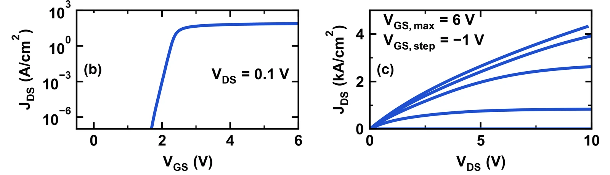
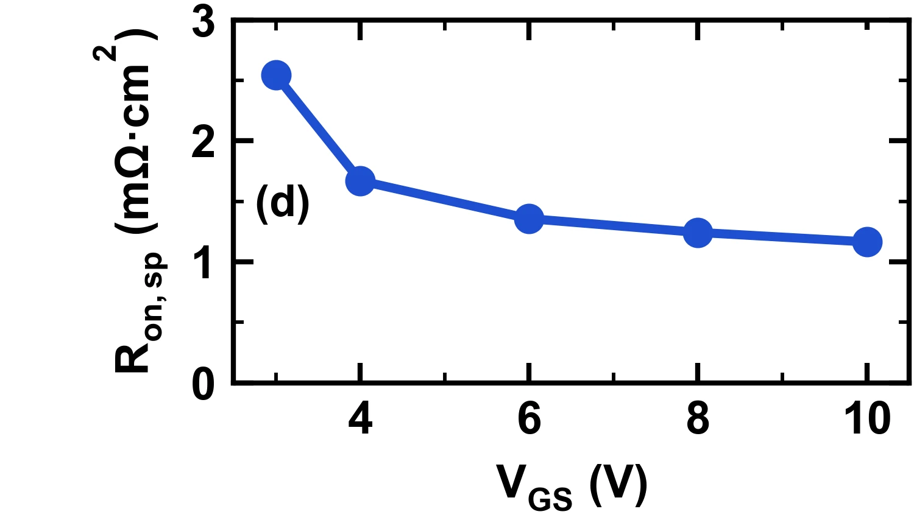
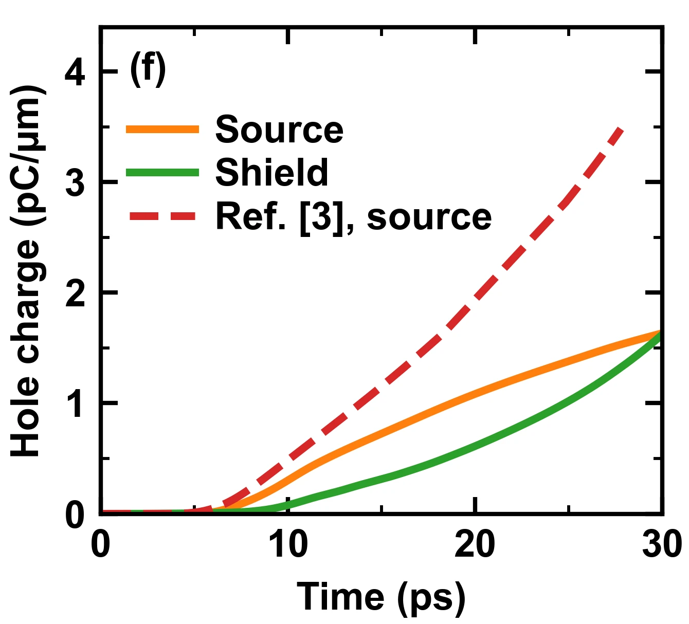
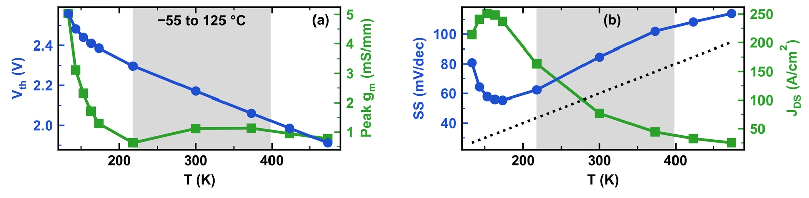

Space-Hardened Vertical GaN Power Transistor
Designing a kilovolt-class vertical GaN transistor that can survive heavy-ion strikes in spacecraft power systems.
Overview
Power converters in orbit need high-voltage transistors that survive cosmic-ray heavy ions, accumulated radiation dose and extreme temperatures. Gallium nitride (GaN) offers excellent power performance, but high-voltage GaN devices remain vulnerable to destructive single-event burnout. In this project I am designing a vertical GaN fin transistor with a buried p-type shield that gives ion-generated charge a second exit, and evaluating it with calibrated device simulation (Silvaco TCAD) under heavy-ion, total-dose and temperature conditions.
What It Covers
- A new device concept: a buried, source-connected p-type shield inside a vertical GaN fin transistor.
- Simulation calibrated against a fabricated kilovolt-class GaN transistor and published heavy-ion burnout data.
- Evaluation under the three space stresses: heavy-ion strikes, total ionizing dose and wide temperature range.
- Results submitted to IEEE EDTM 2027; a full journal article is in preparation.
Selected Results
A selection of the simulation results (Silvaco TCAD). The full set is in the submitted paper.




Status: Ongoing. Conference paper submitted (IEEE EDTM 2027); journal article in preparation. More results will be added after publication.
Publications
- A. H. Shawn and T. Titirsha. Conference paper on a space-hardened vertical GaN fin transistor, IEEE Electron Devices Technology and Manufacturing Conference (EDTM 2027). Submitted, October 2026.
- A. H. Shawn et al. Journal article on the same device. In preparation.